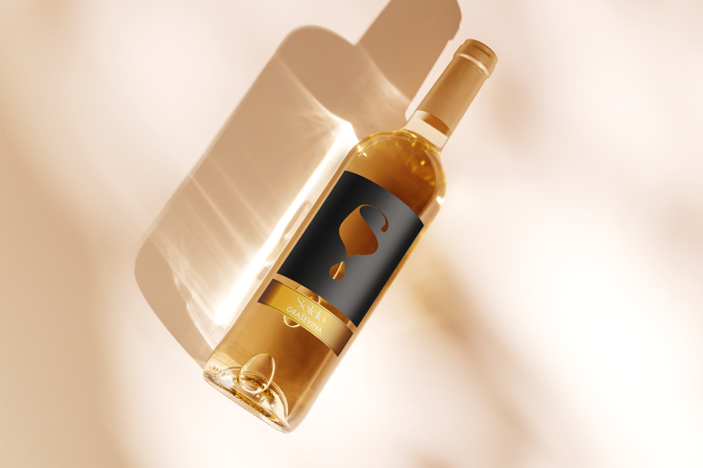
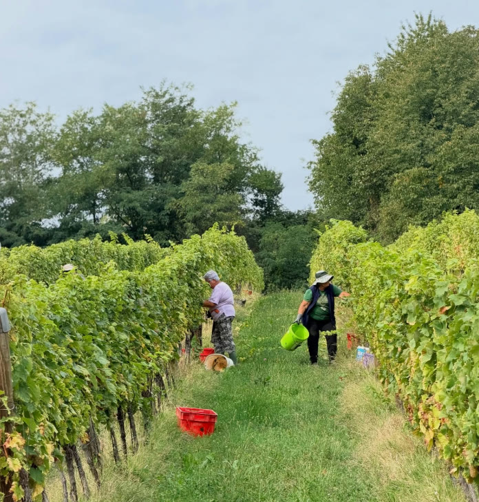
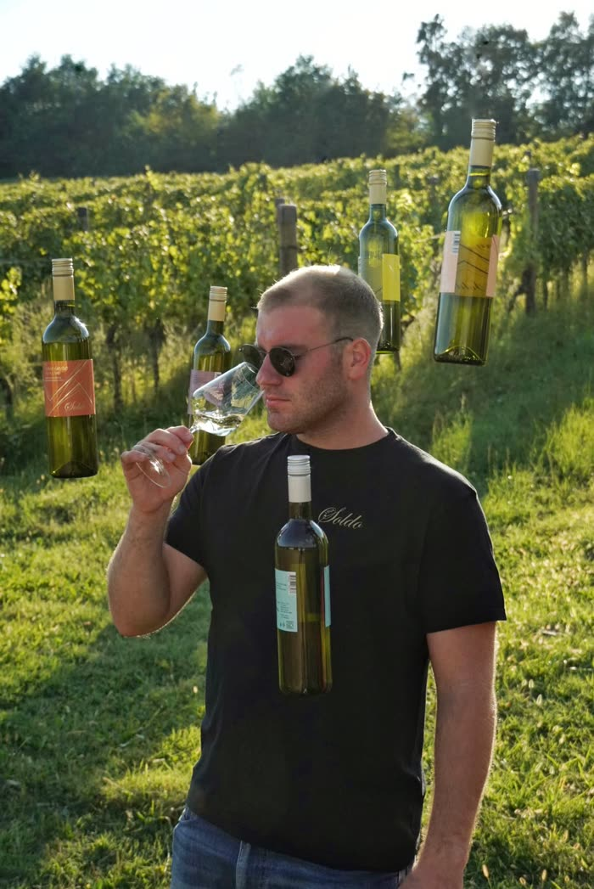

Sind Sie über 18 Jahre alt?
NeinMit einem Klick auf die Schaltfläche bestätigen Sie, dass Sie volljährig sind. Diese Website enthält Informationen über alkoholische Getränke. Bitte trinken Sie verantwortungsbewusst.
Sind Sie über 18 Jahre alt?
NeinMit einem Klick auf die Schaltfläche bestätigen Sie, dass Sie volljährig sind. Diese Website enthält Informationen über alkoholische Getränke. Bitte trinken Sie verantwortungsbewusst.

Drei Generationen, eine Leidenschaft. Entdecken Sie den Weg unserer Familie und die Liebe zum Weinbau, die in jeder Flasche unseres Weinguts steckt.


Die Geschichte der Vinarija Soldo begann vor langer Zeit, als der Vater von Gojko Soldo an den fruchtbaren Hängen unserer Region die ersten Reben pflanzte. Was als kleiner Familienweinberg begann, ist heute ein Weingut, das denselben Geist bewahrt — Handarbeit, Respekt vor der Natur und die Geduld, die der Wein verdient.
Heute wird das Weingut von der dritten Generation der Familie geführt, die traditionelle Methoden mit modernem önologischem Wissen verbindet, damit jede Flasche den authentischen Geschmack unserer Region trägt.
Der Vater von Gojko Soldo pflanzte die ersten Reben auf dem Familiengut und legte damit den Grundstein für unser zukünftiges Weingut.
Gojko Soldo erweitert die Weinberge und widmet sich vollständig dem Weinbau, wodurch die Pflege der Reben ein neues, ernsthafteres Niveau erreicht.
Nach Jahren engagierter Arbeit im Weinberg wurde der Keller gebaut, und die Familie präsentierte stolz die erste Flasche mit der Signatur Soldo.
Mit der fachkundigen Handschrift des Önologen Mirko Soldo verbinden wir Familientradition mit modernem Weinbau. Heute begrüßen wir gerne Gäste in unserem Verkostungsraum, mit erstklassigen Weinen und Blick auf die Hänge der Weinregion Kutjevo.
Wir kümmern uns um den Boden und den Weinberg für zukünftige Generationen.
Jede Flasche entsteht mit aufrichtiger Liebe zum Wein.
Wir pflegen einheimische Rebsorten und lokale Tradition.
Bei der Qualität machen wir keine Kompromisse.
"Die Erde gibt uns, und wir geben ihr mit Geduld zurück."Familie Soldo